When the sky turns orange
Twenty-five years of Vancouver air quality, satellite fire detections and weather, joined into one daily record — and an honest account of what can and cannot be predicted from it.
OrientationStart here
This page is written to be read top to bottom by someone who has never seen the project, and to be jumped around by someone who already knows the domain. The chapters follow the order the work actually happened: build the record, look at it, then try to predict it.
New to the project
Read straight through. Every unfamiliar term is explained in a purple box the first time it appears, and defined again in the glossary.
Begin at chapter 1 →You know ML, not this domain
Chapter 2 explains where the data comes from and what it structurally cannot see — which turns out to bound every result.
Jump to the data →You want the modelling
The headline is that a one-line baseline beats ten trained models, and why that is a finding rather than a failure.
Jump to RQ1 →You're evaluating rigour
Chapter 9 covers a finding that reversed when the record was extended. Chapter 10 is the unvarnished limitations list.
Jump to the honest part →The result in six numbers
For ordinary days, "tomorrow looks like today" beats every model tried — PM2.5 is so strongly autocorrelated (r = 0.80) that there is little left to predict. The interesting problem is the 0.5% of days that are smoke days, where that same baseline fails badly because it always lags the spike by one day. Chapter 7 describes what it takes to beat it there: predict the change rather than the level, penalise under-prediction asymmetrically, and drop the weather features that anchor the model to normal conditions.
Chapter 1The problem
Why Vancouver
Vancouver sits between two fire-prone geographies: the BC Interior plateau to its north and east, and the western United States to its south. Smoke from either can settle over the city for days. Short-term PM2.5 exposure above 35 µg/m³ is associated with emergency department visits for asthma and cardiac events, so the question of whether tomorrow will be a smoke day is a public health question with a short, actionable horizon.
Particulate matter under 2.5 micrometres across: fine enough to reach deep into the lungs and cross into the bloodstream. It is measured in micrograms per cubic metre (µg/m³). Vancouver's typical day sits near 5 µg/m³. This project calls any day above 25 µg/m³ a smoke day.
On 14 September 2020 the city recorded a daily mean of 163.5 µg/m³ — more than six times the smoke-day threshold and roughly thirty times a normal day. The fires responsible were burning in Oregon and Washington, hundreds of kilometres to the south. That single fact ends up shaping the entire modelling story, for reasons chapter 2 makes clear.
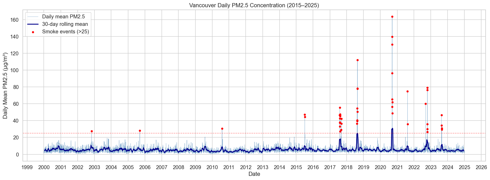
Three questions
The project asks three questions that sit at different timescales, and are answered in the order they were investigated.
| Question | Asks | Answered in |
|---|---|---|
| RQ3 — Trends | Has Vancouver's smoke season worsened since 2000? | Chapter 4 |
| RQ2 — Lag | How long between a fire burning and smoke arriving? | Chapter 5 |
| RQ1 — Forecast | Can tomorrow's PM2.5 be predicted better than a naive baseline? | Chapters 6–7 |
They are numbered by their position in the original proposal but presented here in the order the analysis ran: describe the phenomenon, then measure its physical timing, then try to predict it. Each stage constrained the next.
Chapter 2Building the record
There is no off-the-shelf dataset for this question. Three independent public sources were downloaded, cleaned and joined on a daily date key.
Three sources
flowchart LR A["`**BC Ministry of Environment** hourly PM2.5 · anonymous FTP 25 Metro Vancouver stations`"] B["`**NASA FIRMS** active fire detections MODIS 2000–2011 VIIRS 2012–2024`"] C["`**Open-Meteo** hourly weather 49.25°N, 123.12°W`"] A --> D["`**build_dataset.py** aggregate to daily join on date`"] B --> D C --> D D --> E["`**dataset.csv** 9,133 rows × 90 cols 2000-01-01 → 2025-01-01`"] style D fill:#dfe9f1,stroke:#a9c2d3,color:#2f2d35 style E fill:#dfeee4,stroke:#9dc4ad,color:#2f2d35
Each stream arrives at a different resolution and has to be reduced to one row per day. Air quality arrives hourly per station and is averaged across stations into a city-wide daily mean. Weather arrives hourly for a single grid point and is aggregated to daily means, maxima and sums. Fire detections are the interesting case.
Fire detections become distance bands
A satellite fire detection is a point on the globe with a timestamp and a fire radiative power reading. A raw count is nearly meaningless for Vancouver — a fire 900 km away matters very differently from one 90 km away. Each detection's great-circle distance to Vancouver is computed, and detections are bucketed into three bands, each yielding a daily count and an FRP sum.
Fire radiative power, measured in megawatts, is how much energy a fire is radiating at the moment the satellite passes overhead. It is a proxy for intensity, and therefore for smoke production, in a way a simple count of detections is not.
| Band | Distance from Vancouver | Columns produced |
|---|---|---|
| Close | 0–200 km | count, FRP sum, FRP mean |
| Medium | 200–500 km | count, FRP sum, FRP mean |
| Far | 500–1,000 km | count, FRP sum, FRP mean |
Merging to daily
The three streams are joined with a left join onto air quality, so the row set is driven by days where Vancouver actually recorded PM2.5. Fire columns are filled with zero where no detections occurred — an absence of fire is genuine information, not missingness. The result covers 2000-01-01 to 2025-01-01 with no gaps: every one of the 9,133 calendar days in that span is present, and PM2.5 is never imputed.
The merged file holds 9,133 rows, but modelling uses 9,125. The first seven days are consumed by the lag-7 warm-up (there is no "PM2.5 seven days ago" for 1 January 2000) and the last day has no next-day value to predict. Both numbers appear in the documentation and they are not in conflict.
What the data cannot see
Three structural limits are worth stating up front, because they bound results in later chapters rather than merely qualifying them.
The fire query stops at 48°N. The bounding box passed to NASA FIRMS covers British
Columbia and clips a narrow strip of northern Washington. The Oregon and northern California fires
that produced the September 2020 record burned far to the south of it. On 14 September 2020 the
dataset records fire_count_total = 0 and fire_frp_sum_total = 0.0 against
pm25 = 163.5. No model built on these features can explain the worst event in the
record — not because the model is weak, but because the evidence is absent.
The satellite changed in 2012. Fire detections come from MODIS through 2011 and VIIRS from 2012 onward. VIIRS resolves at 375 m against MODIS's 1 km and detects far more fires: the mean is 21 detections per day before 2012 and 247 after. That ratio is not a clean measure of the instrument change, because 2017, 2018, 2021 and 2023 were genuinely severe fire seasons. A real trend and a sensor discontinuity are confounded in every fire feature, and the pipeline does not separate them.
The monitoring network grew. The number of reporting stations rises from about three in 2000 to about twenty in 2024. A city-wide average over three stations is a noisier, spikier quantity than one over twenty. More stations smooth extremes, which means the worsening trend reported in chapter 4 is, if anything, understated — but the comparison is not like-for-like.
Chapter 3Features
Five groups
Thirty-four features were engineered for the first modelling phase, in five conceptual groups. Phase 2 later added four fire × wind interaction terms, bringing its working set to 38.
| Group | Features | Why |
|---|---|---|
| PM2.5 autoregressive | lags 1, 2, 3, 7 days | Yesterday is by far the strongest predictor (r = 0.80) |
| Fire same-day | count + FRP per band | Concurrent fire activity |
| Fire lagged | lags 1–3, total and close/medium | Allows for delayed transport |
| Wind components | U (east) + V (north) | Direction without the 0°/360° discontinuity |
| Calendar | month, day-of-year, fire-season flag | Seasonality |
Why wind is split in two
Wind direction arrives as a compass bearing in degrees. Feeding that to a model directly is a mistake that looks harmless: 359° and 1° are two degrees apart in reality but 358 units apart numerically. A tree splitting on that variable learns nonsense near north.
The fix is to decompose the bearing and speed into two orthogonal components — U for the eastward part and V for the northward part. Both are continuous across the wrap-around point, and each carries an interpretable meaning: a positive U means air arriving from the west, a negative U from the east.
The U component turns out to carry a real signal. On smoke days its mean is +1.35 m/s against −1.01 m/s on normal days (Mann-Whitney p = 0.0035) — westerly and southerly flow, consistent with smoke arriving from the US Pacific Northwest rather than from the BC interior. The V component shows no significant difference (p = 0.73).
Chapter 4RQ3 — Is it getting worse?
The first analysis run was description rather than prediction: what does the smoke record actually look like, and has it changed?
46 days, 14 episodes
Across 2000–2024, 46 days exceeded 25 µg/m³. Grouping consecutive smoke days into episodes gives 14 distinct events. The distribution is severely skewed: nine episodes last three days or fewer, while the worst three account for most of the total exposure.
| Episode | Days | Peak µg/m³ | Note |
|---|---|---|---|
| 2002-11-01 | 1 | 27.4 | Earliest in the record |
| 2005-09-13 | 1 | 28.1 | |
| 2010-08-05 | 1 | 30.6 | |
| 2015-07-05 → 07-06 | 2 | 47.1 | |
| 2017-08-02 → 08-11 | 10 | 55.5 | Longest episode |
| 2017-09-05 → 09-07 | 3 | 42.3 | |
| 2018-08-13 → 08-15 | 3 | 54.5 | |
| 2018-08-19 → 08-23 | 5 | 112.1 | |
| 2020-09-11 → 09-18 | 8 | 163.5 | US-origin; invisible to BC fire data |
| 2021-08-13 → 08-14 | 2 | 74.8 | |
| 2022-09-11 | 1 | 60.0 | |
| 2022-10-16 → 10-20 | 5 | 79.2 | Unusually late in the year |
| 2023-08-20 | 1 | 46.6 | |
| 2023-08-25 → 08-27 | 3 | 34.3 |
Eleven of the fourteen fall in 2015 or later. That is the trend question in raw form.
Extremes move, averages do not
A rank correlation. Rather than asking "does this go up linearly", it asks "does this tend to go up" by comparing the ordering of values rather than the values themselves. It is the right tool when the quantity is not normally distributed and there are few observations — both true of annual smoke counts. ρ runs from −1 to +1; the p-value is the probability of seeing that much monotone trend by chance.
| Metric | ρ | p | Significant at 0.05? |
|---|---|---|---|
| Smoke day frequency | 0.480 | 0.015 | yes |
| Peak episode PM2.5 | 0.648 | 0.043 | yes, marginally |
| Longest episode per year | 0.483 | 0.015 | yes |
| Fire-season mean PM2.5 | 0.202 | 0.330 | no |
The last row is the most important one. Average air quality during fire season has not measurably changed, while the extremes have. Smoke is becoming more frequent, longer-lasting and more severe without moving the seasonal mean — which is precisely what tail amplification looks like, and precisely what average-based air quality monitoring is built to miss.
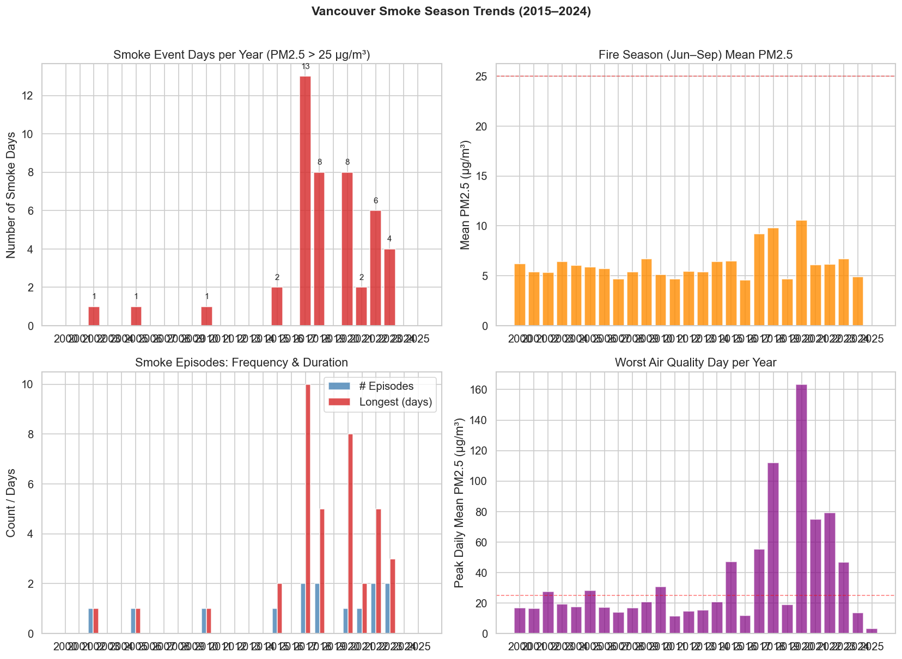
Four tests were run at α = 0.05 with no multiple-comparison correction. Under a Holm correction the peak-severity result (p = 0.043) would not survive; the frequency result (p = 0.015) would. The four tests also do not share a sample definition — three run over all 25 years with non-event years zero-filled, while peak severity runs over only the ten years that contain an episode, which is why it is the weakest of the four.
The weather signature
Smoke days do not look meteorologically like ordinary days. Comparing the two groups with Mann-Whitney U tests:
| Variable | Smoke days | Normal days | Difference | p |
|---|---|---|---|---|
| Temperature (°C) | 19.26 | 10.29 | +8.97 | 2.6e−19 |
| Precipitation (mm) | 0.54 | 5.67 | −5.14 | 7.5e−08 |
| Relative humidity (%) | 75.64 | 80.58 | −4.94 | 0.010 |
| Pressure (hPa) | 1015.06 | 1016.50 | −1.43 | 0.018 |
| Wind speed (km/h) | 7.85 | 8.11 | −0.26 | 0.92 |
Smoke days are dramatically hotter and drier. They are not measurably calmer — the wind speed difference is negligible and statistically indistinguishable from zero. That last row has a history worth telling, and chapter 9 tells it.
Chapter 5RQ2 — How fast does smoke arrive?
If a fire starts today 400 km away, when does Vancouver's air quality degrade? A useful forecast would exploit that delay. The analysis looked for it and largely did not find one.
Cross-correlation
Shift one series by k days against another and measure the correlation. Doing this across a range of k shows which offset aligns them best. If smoke took three days to arrive, fire activity would correlate most strongly with PM2.5 three days later, and the curve would peak at k = 3.
Fire activity and PM2.5 were deseasonalised and cross-correlated at lags from −7 to +14 days, restricted to the June–September fire season. Across all three distance bands the peak sits at lag 0, with correlations of r = 0.199 to 0.261.
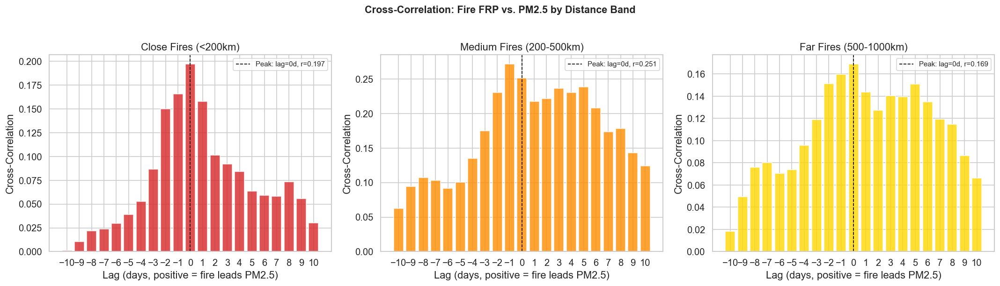
The honest reading is that this measures a ceiling rather than a delay. Smoke plainly takes hours to travel hundreds of kilometres — but a dataset with one row per day cannot resolve anything finer than a day. The finding is "the delay is under 24 hours", which is a real answer to the question and also a demonstration that daily resolution is the wrong instrument for it.
What fire activity actually adds
A regression decomposition asked how much each feature group contributes to explaining fire-season PM2.5, adding one group at a time.
| Feature set | R² | Gain |
|---|---|---|
| PM2.5 lags only | 0.693 | — |
| + fire lags | 0.701 | +0.008 |
| + weather | 0.719 | +0.019 |
These are in-sample, exploratory figures on 3,050 fire-season days, not cross-validated — the notebook says so explicitly and the number would be lower under proper validation. They are included to compare groups against each other, not as performance estimates.
Fire features add well under one percentage point of explanatory power on top of PM2.5's own history. That is the first clear signal of what chapter 6 confirms: satellite fire counts, at this resolution, are close to useless for predicting Vancouver's air quality.
Chapter 6RQ1 — Persistence wins
Getting the evaluation right first
Time series break the usual cross-validation assumption. Shuffling days at random and holding some out lets a model train on 2023 and be tested on 2019 — it learns the future to predict the past, and every score is inflated. The fix is an expanding window: train on everything before a cutoff, test on what follows, and step the cutoff forward.
flowchart TB
subgraph F1["`Fold 1 — cutoff 2004`"]
A1["`train: 2000–2003`"] --> B1["`test: 2004+`"]
end
subgraph F2["`Fold 2 — cutoff 2008`"]
A2["`train: 2000–2007`"] --> B2["`test: 2008+`"]
end
subgraph F3["`Fold 3 — cutoff 2012`"]
A3["`train: 2000–2011`"] --> B3["`test: 2012+`"]
end
subgraph F4["`Folds 4–5 — cutoffs 2016, 2020`"]
A4["`train grows`"] --> B4["`test shrinks`"]
end
F1 --> F2 --> F3 --> F4
style B1 fill:#f6e6da,stroke:#ddb493,color:#2f2d35
style B2 fill:#f6e6da,stroke:#ddb493,color:#2f2d35
style B3 fill:#f6e6da,stroke:#ddb493,color:#2f2d35
style B4 fill:#f6e6da,stroke:#ddb493,color:#2f2d35
Scaling is fitted inside each fold on the training portion only, so no test-period statistics leak backwards. Every model in this chapter is scored the same way, against the same folds.
MAE is mean absolute error: on average, how many µg/m³ the prediction misses by. Lower is better and it is in the units of the thing being predicted. R² is the fraction of variance explained; 1.0 is perfect, 0 means no better than always guessing the mean, and negative means actively worse than that.
Ten models, none of them better
Two baselines and ten trained models were compared. The baselines are deliberately trivial: persistence predicts tomorrow equals today; rolling mean predicts the average of recent days.
| Model | MAE | RMSE | R² | Smoke-day MAE |
|---|---|---|---|---|
| Persistence (baseline) | 1.694 | 3.166 | 0.600 | 22.114 |
| Random Forest (100 trees) | 1.783 | 4.842 | 0.165 | 43.599 |
| Random Forest (200 trees) | 1.793 | 4.878 | 0.153 | 43.496 |
| LightGBM (tuned) | 1.845 | 4.898 | 0.146 | 43.886 |
| XGBoost | 1.848 | 4.883 | 0.151 | 42.803 |
| Lasso (α = 0.1) | 1.858 | 4.340 | 0.329 | 34.627 |
| Ridge / OLS | 2.004 | 4.602 | 0.246 | 32.845 |
| Rolling mean (baseline) | 2.375 | 4.786 | 0.087 | 36.056 |
Persistence wins on MAE and on R², and it is not close. It also wins on smoke-day MAE by a factor of two against the tree models — which is startling until you notice what those models are doing. They are trained to minimise average error on a dataset where 99.5% of days are clean, so they learn to predict "clean" and eat the cost on the rare days. Persistence at least carries yesterday's spike forward.
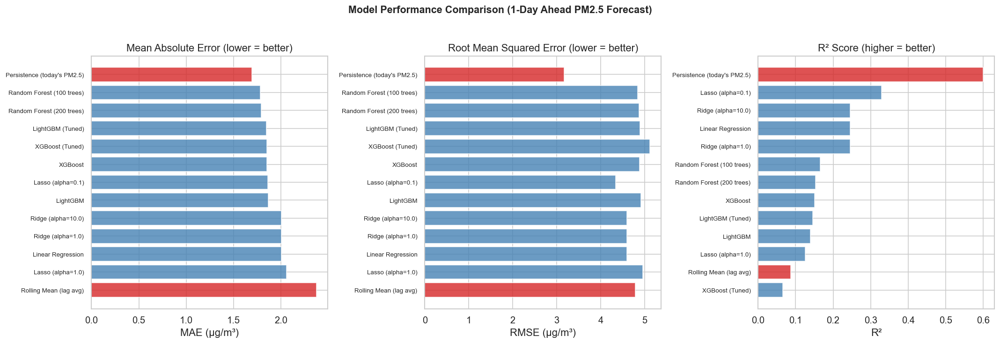
The reason is visible in the feature importances: PM2.5 lag-1 alone accounts for roughly 40% of the Random Forest's importance. The models are, in effect, rediscovering persistence and adding noise on top.
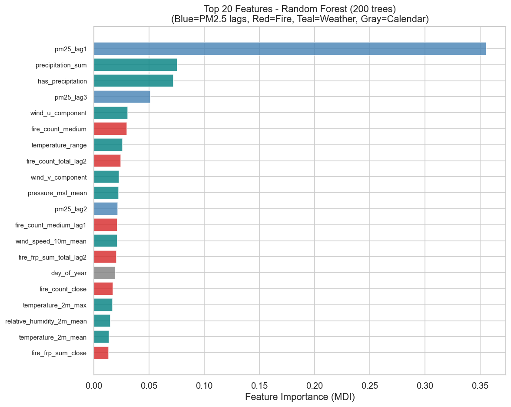
The ablation surprise
Feature importance answers "what is the model using?" It does not answer "what is worth including?" For that you need ablation — remove a group and re-measure.
| Feature set | Features | MAE | R² |
|---|---|---|---|
| All features | 34 | 1.793 | 0.153 |
| No fire features | 17 | 1.750 | 0.137 |
| No calendar | 31 | 1.802 | 0.156 |
| No weather | 24 | 2.218 | 0.065 |
| PM2.5 lags only | 4 | 2.210 | 0.031 |
| Fire features only | 17 | 2.594 | 0.017 |
Deleting every fire feature from a wildfire smoke model improves its average error. The effect is real but narrower than it first appears: MAE improves from 1.793 to 1.750 while R² falls from 0.153 to 0.137, so the model gets better on typical days and worse at capturing variance. Both halves belong in the summary.
The explanation is that a daily fire count carries no transport direction. A thousand detections 900 km away with wind blowing them east is indistinguishable, in this feature set, from a thousand detections blowing straight at the city. Weather already encodes the stagnation conditions under which smoke accumulates, which leaves fire counts contributing mostly noise.
A holdout test trained on 2000–2020 and evaluated on 2021–2024 sharpened the point. Random Forest degrades to MAE 2.088 with R² = −0.125 — worse than predicting the mean. Persistence holds at 1.759 and R² = 0.384. The models are not under-powered; the relationship they learned does not hold in the following period.
Chapter 7Specialising for smoke days
Chapter 6 establishes that overall accuracy is a solved and uninteresting problem — persistence owns it. Phase 2 changes the question: accept a worse average in exchange for being better on the days that matter. Thirteen scripts across nine experiments explored that trade.
The benchmark shifts accordingly. On the evaluation window the folds actually cover, persistence scores 1.668 overall and 22.353 on smoke days. Beating that second number is the goal, and "smoke Δ" below is how much better than persistence a model is on smoke days.
Residual framing — the one that mattered
Every Phase 2 model predicts pm25_tomorrow − pm25_today rather than
pm25_tomorrow, then adds today's value back. This sounds like bookkeeping and is the
single most consequential decision in the project.
flowchart LR
subgraph D["`**Direct** — predict the level`"]
D1["`model must learn
'tomorrow ≈ today'
from scratch, every day`"] --> D2["`Q=0.90 smoke-day MAE
**39.650**`"]
end
subgraph R["`**Residual** — predict the change`"]
R1["`persistence is the
built-in default;
model predicts only
the deviation`"] --> R2["`Q=0.90 smoke-day MAE
**21.391**`"]
end
D --> R
style D2 fill:#f6e2e0,stroke:#d3a5a2,color:#2f2d35
style R2 fill:#dfeee4,stroke:#9dc4ad,color:#2f2d35
Predicting the level forces the model to spend its capacity relearning autocorrelation it was already handed in the lag features. Predicting the change bakes persistence in as the prior and asks the model only for the deviation — which is the part that is actually hard. For the Q=0.90 model the switch moves smoke-day MAE from 39.650 to 21.391, a 46% improvement from a two-line transformation.
Quantile regression — buying spike sensitivity
Ordinary MAE penalises over- and under-prediction equally, so the optimum is the median. Quantile loss at level α penalises under-prediction by α and over-prediction by (1 − α). At α = 0.80 missing low costs four times as much as missing high, so the model deliberately aims above the median — which is what you want when the failure you care about is missing a spike.
| Model | Overall MAE | Smoke-day MAE | Normal-day MAE | Smoke Δ |
|---|---|---|---|---|
| Persistence | 1.668 | 22.353 | 1.545 | — |
| LightGBM MAE (α = 0.50) | 1.504 | 22.181 | 1.382 | +0.172 |
| α = 0.75 | 1.852 | 21.813 | 1.735 | +0.540 |
| α = 0.80 (chosen) | 1.995 | 21.760 | 1.878 | +0.593 |
| α = 0.90 | 2.521 | 21.391 | 2.410 | +0.962 |
| α = 0.95 | 3.061 | 21.228 | 2.954 | +1.125 |
The trade is perfectly monotone: every increase in α improves smoke-day error and worsens overall error. There is no free lunch to find, only a price to choose. α = 0.80 was selected as the balance point, though the honest position is that the right α depends on the relative cost of a missed alert versus a false one — a number this project never specified.
Fire-only features — less is more, barely
If weather features anchor the model to normal-day behaviour, removing them during fire events might help. Three feature sets were compared under the α = 0.80 residual model.
| Feature set | Features | Overall MAE | Smoke-day MAE | Smoke Δ |
|---|---|---|---|---|
| Full set | 38 | 1.995 | 21.760 | +0.593 |
| Fire + season | 27 | 2.067 | 21.735 | +0.618 |
| Fire-only | 24 | 2.075 | 21.729 | +0.624 |
This is the project's best smoke-day model: smoke-day MAE 21.729, beating persistence by 0.624 µg/m³. The gain over the full feature set is +0.031 — consistent in direction but small, and it should be described as such. "Fire-only" is also a slight misnomer: the set drops temperature, humidity, precipitation and pressure but keeps wind, since wind is what carries smoke.
The smoke classifier
A parallel line of work asked a simpler question: not how bad will tomorrow be, but will tomorrow be a smoke day at all? This is binary classification on a class that occurs 0.5% of the time.
A classifier that always says "no smoke" is 99.5% accurate and completely useless. Area under the precision-recall curve measures how well the model ranks the rare positives above the negatives. Its random baseline is the positive rate itself — here 0.006 — so any value meaningfully above that carries information.
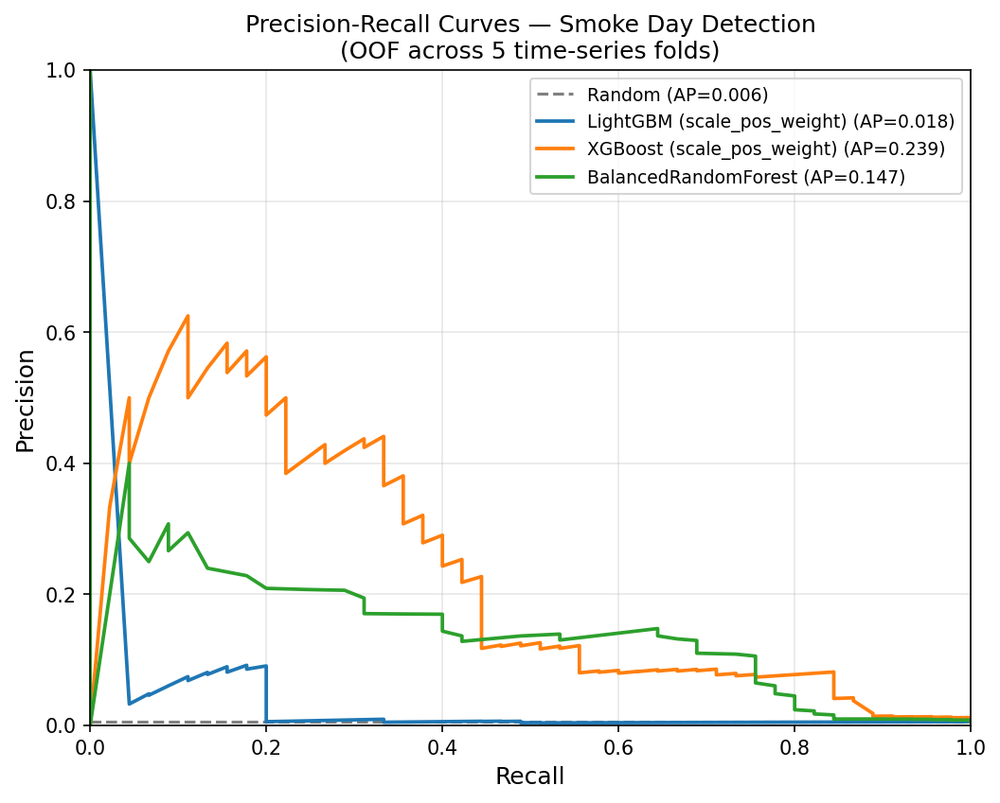
The training script reports AUPRC = 0.331, which is the mean of five per-fold values. Because each fold's test window runs from its cutoff to the end of the data, the windows are nested, and the severe post-2017 events get scored in several of them — which pulls the mean up. Pooling every out-of-fold prediction into one curve gives AP = 0.239, and that is the number plotted above. Quote 0.239 as the single-figure result; 0.331 is only meaningful as a per-fold mean. The reported F2 of 0.455 carries a separate caveat: its decision threshold is tuned on the same fold it is scored on, so it is optimistically biased.
Measured by episodes rather than days, the XGBoost gate catches 8 of the 13 episodes that fall inside a test window. (Thirteen rather than fourteen because the 2002 event predates the first cutoff and so is never tested.) The five misses are individually explicable:
| Missed episode | Why |
|---|---|
| 2005-09 | Sparse pre-2010 training data — structural |
| 2017-08 | Distant fires, mean 350 km; no close-range signal to fire on |
| 2018-08 | Fast onset — fire activity jumped on day 2, too late to predict day 1 |
| 2020-09 | US-origin fires; BC fire features read zero against PM2.5 of 163 |
| 2023-08 | Single pre-smoke day, 14 µg/m³ today and above 25 tomorrow |
None of these are random failures, and that matters: failure modes with physical explanations are addressable with better data. Four of the five point at the same two fixes — fire data from the US Pacific Northwest, and some representation of transport direction.
What did not work
Negative results were kept rather than quietly dropped, because in a project whose headline finding is "the baseline wins" they carry as much information as the successes.
| Attempt | Smoke Δ | Why it failed |
|---|---|---|
| Sample weighting (smoke days × 20) | −0.921 | Taught the model that any elevated day keeps rising; most do not |
| Hurdle model (gate + regressor) | −1.2% | Gate errors compound into the regressor stage |
| LSTM (2-layer, 7-day window) | −24% to −27% | 46 positive events is nowhere near enough sequence data |
| Custom asymmetric MAE (5× penalty) | +0.082 | Equivalent to α ≈ 0.83 but less well calibrated than the native objective |
| Soft gate blending (raw probabilities) | +0.137 | Gate probabilities average 0.13 even on real smoke days; the blend barely engages |
The sample-weighting result is the most instructive. Upweighting smoke days seems like the obvious response to class imbalance, and it made things worse than persistence — because the model generalised "elevated PM2.5 means rising PM2.5" to the many elevated days that never become smoke days. The LSTM figure is a range rather than a point because the script sets no random seed; three runs gave −27%, −24.4% and −25.1%.
Chapter 8The dashboard
The findings are delivered as an interactive Streamlit application — seven tabs, run locally with
streamlit run app/streamlit_app.py. The merged dataset ships with the repository, so
nothing needs downloading first. The screenshots below are from a live session.
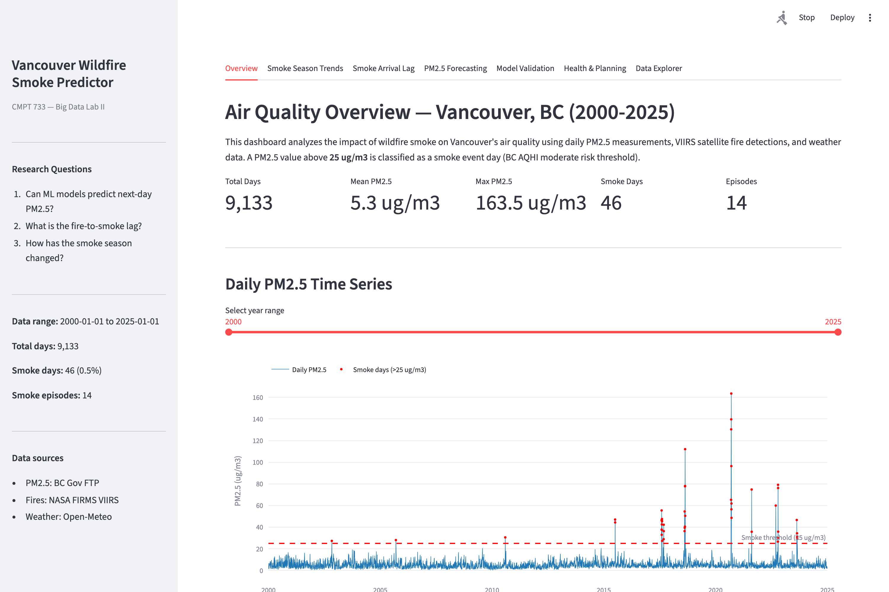
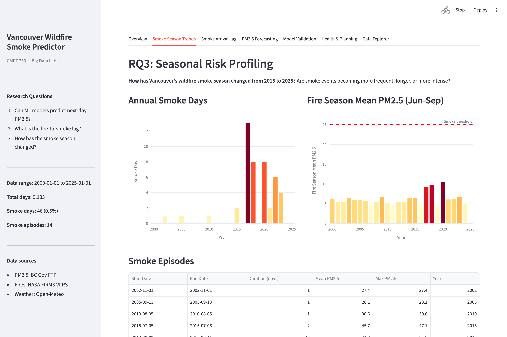
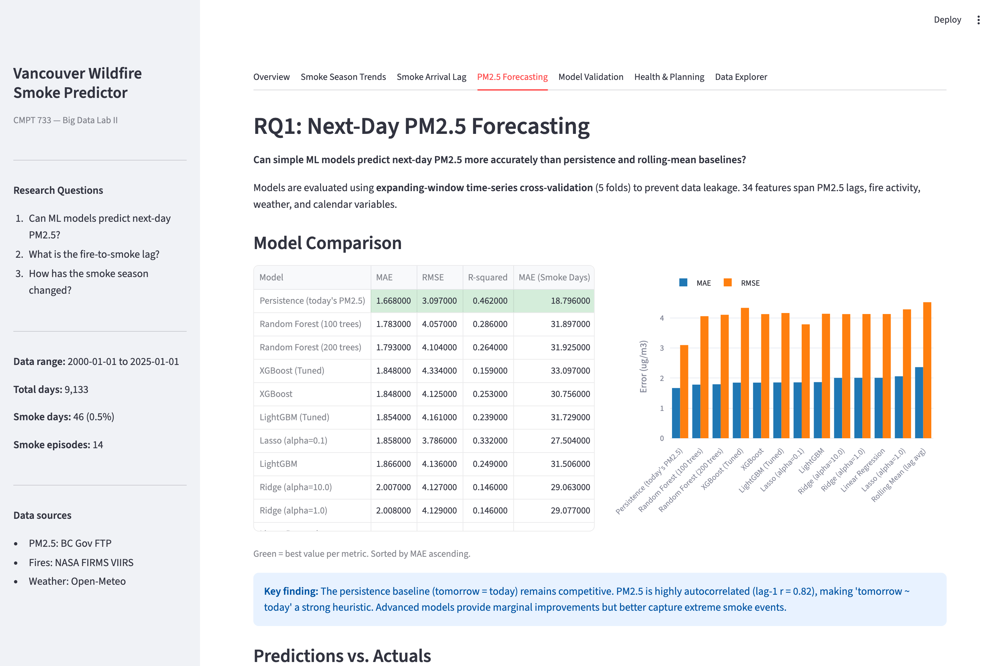
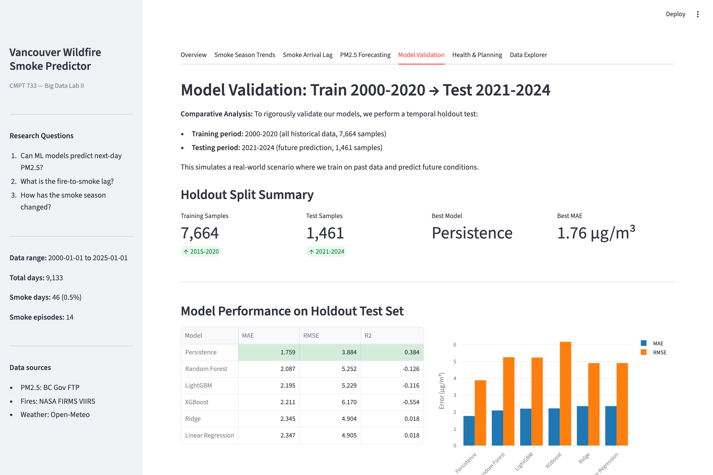
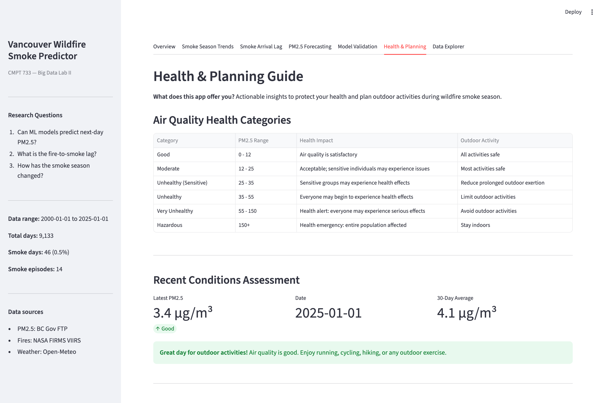
The remaining two tabs are Smoke Arrival Lag, which carries the cross-correlation figures and a per-episode explorer, and Data Explorer, which exposes the full 9,133 × 90 table with date filtering and CSV export.
The app uses the width="stretch" API introduced in Streamlit 1.49 and will raise a
TypeError on older releases, so requirements.txt pins
streamlit>=1.49. There is no public deployment.
Chapter 9When the record grew
This chapter exists because a result in this project reversed, and the reversal is more interesting than the original finding.
The dataset started as ten years, 3,654 rows, 2015–2024. It was later rebuilt to twenty-five years, 9,133 rows, 2000–2024, and the analyses were re-run. One of the things that changed was the weather signature of smoke days.
| Claim | 10-year record | 25-year record | Verdict |
|---|---|---|---|
| Lag-1 autocorrelation | 0.8216 | 0.8001 | Essentially unchanged |
| Smoke days hotter | +9.16 °C | +8.97 °C | Holds, strengthens |
| Smoke days drier | −4.54 mm | −5.14 mm | Holds, strengthens |
| Smoke days calmer | −1.46 km/h, p = 0.029 | −0.26 km/h, p = 0.92 | Does not survive |
On ten years of data, smoke days were measurably calmer, and the natural reading was a stagnant blocking anticyclone — a high-pressure system that simultaneously dries out fuel, drives ignition, and traps smoke near the surface under still air. Hot, dry and calm is a coherent meteorological story, and it was supported at p = 0.029.
On twenty-five years it disappears. The wind difference shrinks to a quarter of a kilometre per hour and the p-value goes to 0.92 — as close to "no effect" as the test can report. The heat and dryness signals, meanwhile, got stronger.
The stagnation hypothesis is still consistent with the temperature and precipitation evidence, and those are the two strongest signals in the dataset by many orders of magnitude. But it is not supported by the wind data, and the current write-up says so. A fifteen-year extension is a far better test than the original ten years, and when a marginal p-value at 0.029 evaporates on four times the data, the longer record is the one to believe.
The wider lesson is about documentation rather than meteorology. When the dataset was rebuilt, the notebooks were re-run but one summary document kept its original numbers — which stayed internally consistent and quietly stopped matching the data. Every figure in it was correct for the record it was written against. This is an ordinary and easily-made failure, and the defence against it is mechanical: regenerate prose figures from the artifacts rather than copying them forward, and re-verify claims against the data rather than against the previous draft.
Chapter 10Limitations
The full list lives in existing_issues.md.
These are the ones that most affect how the results should be read.
Evaluation
- The classifier folds are nested. Test windows run from each cutoff to the end of the data rather than between cutoffs, so later events are scored repeatedly. This is why the per-fold AUPRC mean (0.331) exceeds the pooled AP (0.239).
- The F2 threshold is tuned on the test fold, making the reported 0.455 optimistically biased. AUPRC is threshold-free and unaffected.
- The regression evaluation is sound — but for a subtle reason. The same nested folds are used, yet predictions are overwritten fold by fold, so each day ends up scored by the model trained up to the most recent prior cutoff. That is a correct expanding-window evaluation arrived at accidentally, and anyone fixing the fold construction must preserve it.
- The trend statistics are not computed by committed code. All four Spearman results reproduce exactly from the dataset, but the analysis that produced them was run outside the notebooks in the repository.
Data
- The 2020 ceiling. The worst event in the record is invisible to the fire features. This bounds every fire-based result, not just that episode.
- MODIS → VIIRS is unadjusted. A sensor discontinuity and a genuine increase in fire activity are confounded in every fire feature.
- The station network grew sevenfold, and the city-wide average is not normalised for it.
- Raw data is not committed, so
dataset.csvcannot be re-derived from a fresh clone without re-downloading from sources that may have been revised since.
What comes next
- Add US Pacific Northwest fire data. Highest value by a wide margin — it addresses the ceiling that bounds everything else.
- Fix the classifier evaluation — disjoint folds, threshold selected off the test fold, pooled AP as the headline.
- Move to hourly PM2.5, which is the only way to resolve a transport lag that daily data reports as zero.
- Add HYSPLIT back-trajectories so transport direction becomes a feature instead of an inference.
- Commit the trend analysis as code, and seed the LSTM.
ReferenceGlossary
- Ablation
- Removing a feature group and re-measuring, to find its marginal contribution rather than its apparent importance.
- AUPRC / AP
- Area under the precision-recall curve. The right metric for rare-event classification; its random baseline is the positive rate.
- Cross-correlation
- Correlation between two series at a range of time offsets, used to find the lag at which they align best.
- Expanding window CV
- Time-series cross-validation where training data grows and testing always happens on later data, preventing future information leaking backwards.
- F2 score
- A precision-recall blend weighting recall four times more heavily than precision — appropriate when a missed alert costs more than a false one.
- FIRMS
- NASA's Fire Information for Resource Management System, the source of the satellite fire detections.
- FRP
- Fire radiative power in megawatts: how much energy a fire radiates, a proxy for its smoke output.
- HYSPLIT
- An atmospheric transport model that traces where an air parcel came from. Named in future work as the way to make transport direction a feature.
- MAE
- Mean absolute error, in the units of the target. Here, µg/m³ of PM2.5.
- MODIS / VIIRS
- Two satellite instruments for fire detection. VIIRS (2012 onward) resolves at 375 m against MODIS's 1 km.
- Non-stationarity
- When the statistical relationship being modelled changes over time, so a model fitted on one period degrades on the next.
- Persistence baseline
- Predicting that tomorrow equals today. Trivial, and in this project unbeaten on overall error.
- PM2.5
- Airborne particles under 2.5 µm across, measured in µg/m³. The target variable.
- Quantile (pinball) loss
- An asymmetric loss that penalises under- and over-prediction differently, aiming the model at a chosen quantile rather than the median.
- R²
- Fraction of variance explained. Zero means no better than predicting the mean; negative means worse.
- Residual framing
- Predicting the change from today rather than tomorrow's level, which builds the persistence baseline in as the model's default.
- scale_pos_weight
- A gradient-boosting parameter that upweights the minority class during training. Used here instead of synthetic oversampling.
- Smoke day
- Any day with a city-wide mean PM2.5 above 25 µg/m³. There are 46 in 25 years.
- Smoke episode
- One or more consecutive smoke days treated as a single event. There are 14.
- Spearman's ρ
- A rank correlation testing for monotone trend without assuming normality or linearity.
- U / V wind components
- Wind decomposed into eastward and northward parts, avoiding the discontinuity at 0°/360°.